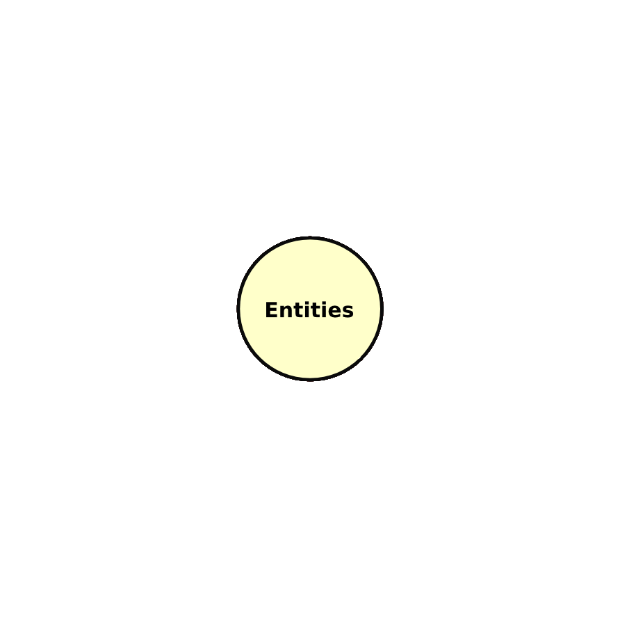
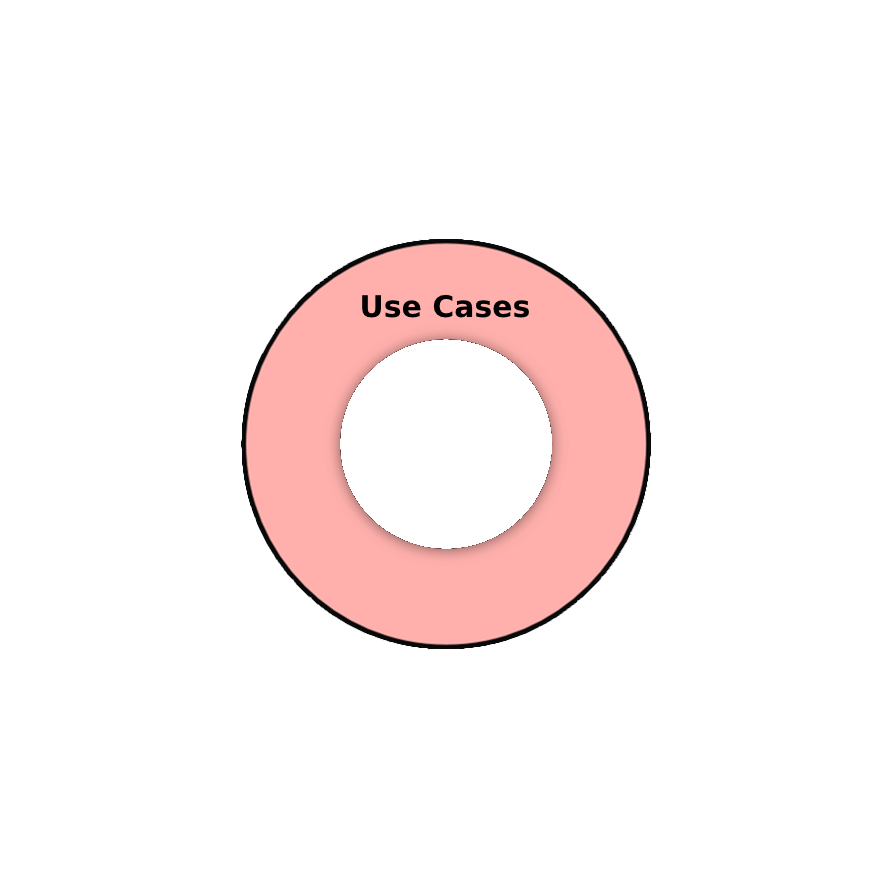
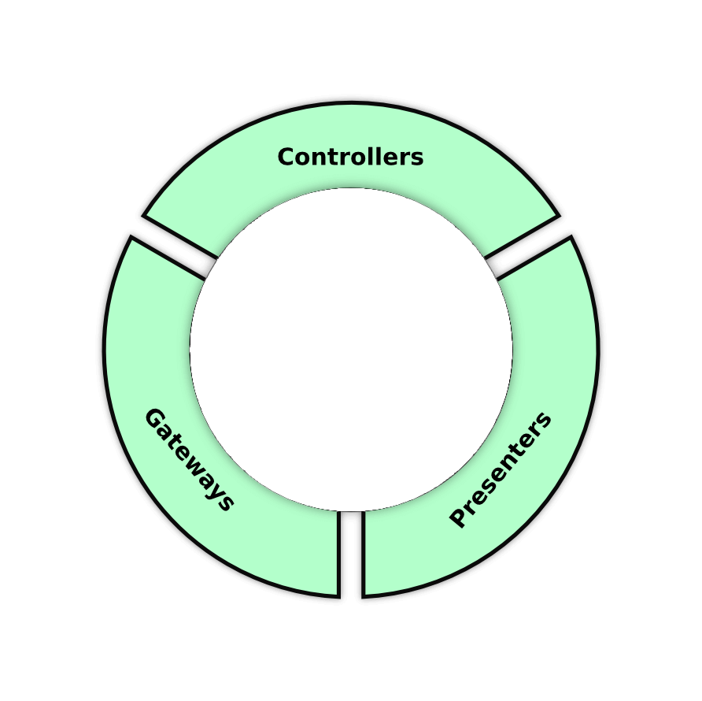
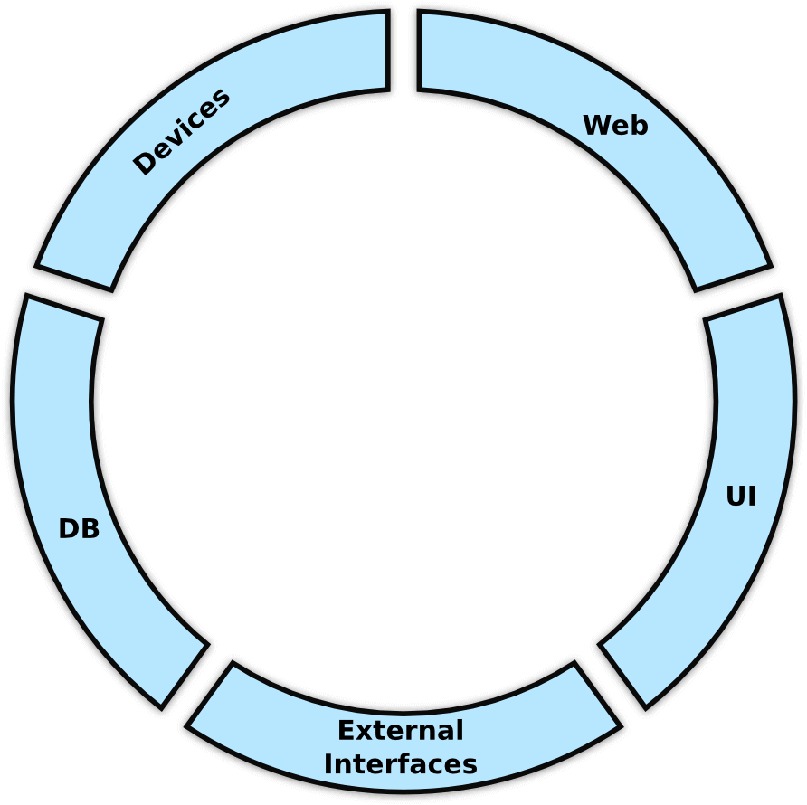
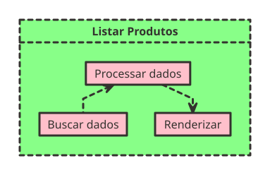
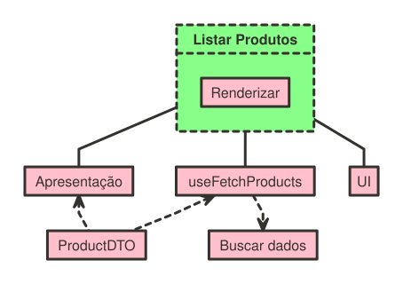

Aplicando boas práticas
no Frontend
Vinícius Campitelli
Sobre
Sobre
Sobre mim

Campitelli
- Bacharel em Ciência da Computação pela UFSCar
- Desenvolvedor há mais de 15 anos
- Membro do PHPSP
- Entusiasta em cibersegurança
- Consultor de TI e instrutor de treinamentos
Sobre
Slides
github.com/vcampitelli/slides-boas-praticas-frontend
Linting
Linting
Primeiro, instale uma ferramenta de linting, como o eslint, prettier ou biome
Execute a ferramenta de correção automática (como eslint --fix), corrija
manualmente possíveis erros que não puderam ser resolvidos, teste bem e abra uma PR somente
com as correções de seu projeto
Conceitos
Conceitos
Any fool can write code that a computer can understand. Good programmers write code that humans can understand. Martin FowlerRefactoring: Improving the Design of Existing Code
Conceitos
Coesão
Relacionamento que os membros de um módulo possuem. Códigos coesos são aqueles de relação forte, onde seus membros estão intimamente ligados e estão ali por um objetivo comum. Membros que não são absolutamente necessários para aquele módulo não devem estar presentes em códigos coesos.StackOverflow: O que são os conceitos de coesão e acoplamento?
Conceitos
Acoplamento
Relacionamento entre os módulos. Indica quanto um módulo depende de outro para funcionar. Códigos desacoplados são aqueles de relação fraca, e não dependem de outros para fazer sua funcionalidade básica. É sempre desejável um baixo nível de acoplamento.StackOverflow: O que são os conceitos de coesão e acoplamento?
Conceitos
SOLID
Princípios que foram apresentados originalmente por Robert Martin em 2000 em seu artigo Design Principles and Design Patterns, em que descreve conceitos para evitar que um software apodreça
-
Single Responsibility Principle
-
Open-Closed Principle
-
Liskov Substitution Principle
-
Interface Segregation Principle
-
Dependency Inversion Principle
Conceitos
SOLID
Single Responsibility Principle
Uma unidade (classe/módulo/função) deve ter uma única razão para mudar
Veremos isso ao falarmos sobre o problema que queremos resolver
Conceitos
SOLID
Open-Closed Principle
Seu sistema deve estar aberto para extensão e fechado para modificação
Exemplo: ao adicionar um novo gateway de pagamento, em quantos lugares da aplicação precisaremos mexer?
<button v-if="gateway-enabled-pagseguro">PagSeguro</button>
<button v-if="gateway-enabled-paypal">PayPal</button>
<button v-if="gateway-enabled-pagarme">Pagar.me</button>
<button v-if="gateway-enabled-getnet">Getnet</button>
<button v-if="gateway-enabled-mercadopago">MercadoPago</button>
Conceitos
SOLID
Liskov Substitution Principle
Uma classe filha deve respeitar os comportamentos e restrições da classe pai
async function createPagSeguroTransaction() { /* ... */ }
async function createPayPalTransaction() { /* ... */ }
// src/handlers/index.ts
let transaction = (type == 'pagseguro')
? await createPagSeguroTransaction()
: await createPayPalTransaction();
if (type == 'pagseguro') {
transaction = transaction.currentTransaction;
} else {
transaction.price = transaction.value / 100;
}
Conceitos
SOLID
Interface Segregation Principle
Abstrações não podem ser genéricas demais
interface Gateway {
create: (data: any) => Promise<Transaction>;
update: (id: number, data: Transaction) => Promise<boolean>;
cancel: (id: number) => Promise<boolean>;
}
class AlgumGateway implements Gateway {
update (id: number, data: Transaction): Promise<boolean> {
throw new Error('Esse Gateway não permite alterar transações pendentes');
}
}
Conceitos
SOLID
Dependency Inversion Principle
Inverta o uso de dependências para facilitar manutenção e testes
// Page.vue
import mixpanel from 'mixpanel-browser';
mixpanel.track(event);
Código acoplado ao mixpanel
// Page.vue
import useTracking from '@/tracking';
useTracking(event);
// tracking.ts
import mixpanel from 'mixpanel-browser';
export default function useTracking(event: Event) {
mixpanel.track(event);
}
Código desacoplado, com alteração no fluxo de controle
Conceitos
Object Calisthenics
Conjunto de 9 regras inventadas por Jeff Bay no livro “The ThoughtWorks Anthology” de 2008
- Only One Level Of Indentation Per Method
- Don’t Use The ELSE Keyword
- Wrap All Primitives And Strings
- First Class Collections
- One Dot Per Line
- Don't Abbreviate
- Keep All Entities Small
- No Classes With More Than Two Instance Variables
- No Getters/Setters/Properties
Conceitos
Clean Architecture
Abordagem para produzir sistemas testáveis e independentes de frameworks, UI, banco de dados, ou qualquer outro agente externo




■ Entities
Encapsulam regras de negócios de toda a empresa, que podem ser usadas por diferentes sistemas — geralmente são models e validações de seus atributos■ Use Cases
Definem regras de negócios específicas da aplicação, que normalmente são um conjunto de Use Cases ou ações executadas sobre as Entities■ Interface Adapters
São um conjunto de adaptadores que convertem dados de agentes externos para os Use Cases e Entities■ Framework e Drivers
São serviços externos aos quais os Interface Adapters se conectamConceitos
Overengineering / KISS / YAGNI
Nem sempre começamos com a solução perfeita!
- Evite a criação de soluções excessivamente complexas que são difíceis de entender e manter
- Adapte e evolua o código à medida que o entendimento dos requisitos cresce
- Escolha bem onde fazer o trade-off entre manutenção e entrega rápida de valor
O problema
O problema
Uma página padrão geralmente possui o seguinte fluxo:

Este é um componente que concentra três responsabilidades em um só lugar
Então, ele pode ser alterado se alguma dessas três coisas mudar: a resposta da API, a regra de exibição e a UI — o que é uma falha clara do S do SOLID
O problema
Exemplo de código:
<script setup>
import { onMounted, ref } from 'vue';
const products = ref(null);
const loading = ref(true);
const error = ref(null);
onMounted(() => {
fetch(`${import.meta.env.VITE_API_URL}/products`)
.then((response) => {
const formatter = new Intl.NumberFormat('pt-BR',
{ style: 'currency', currency: 'BRL' },
);
products.value = response.map(p => {
p.price = formatter.format(p.price);
return p;
});
})
.catch((err) => {
error.value = err.message;
console.error(err);
})
.finally(() => {
loading.value = false;
});
});
</script>
<template>
<div>
<h1>Produtos</h1>
<p v-if="loading">Carregando...</p>
<p v-else-if="error">Erro: {{ error }}</p>
<div v-else class="flex">
<div v-for="product in products" :key="product.id">
<p class="name">{{ product.name }}</p>
<span class="price">{{ product.price }}</span>
</div>
</div>
</div>
</template>
O que temos de "errado"?
- Alto acoplamento com a API
- Regras de renderização
- Responsabilidades misturadas
Proposta de Solução

O ideal é separar essas responsabilidades em suas próprias camadas: funcionalidades que mudam pelo mesmo motivo devem estar juntas
Refatoração
Abstraindo requisições da API
Refatoração
Abstraindo requisições da API
Cenário: o backend irá modificar a rota de listagem de produtos: renomeando-a, pedindo mais um parâmetro e retornando os dados em um outro campo
Em quantos lugares você precisará trocar?
ProductList.vue
-fetch('/produtos')
+fetch('/products?active=1')
.then(response => {
- products.value = response;
+ products.value = response.data;
});
ProductsByCategory.vue
-fetch('/produtos?category=' + id)
+fetch('/products?active=1&category=' + id)
.then(response => {
- products.value = response;
+ products.value = response.data;
});
E provavelmente muitos outros...
Refatoração
Abstraindo requisições da API
Ao invés de ter vários fetch() espalhados pela aplicação, extraia-os das
páginas e crie uma camada de isolamento
ProductService que tenha todos os métodos,
utilize o conceito de Use Cases da Clean Architecture. Isso irá ajudar a
diminuir o acoplamento, facilitando inclusive a criação de testes no futuro!
Refatoração
Abstraindo requisições da API
Vamos criar Use Cases para cada situação de busca de dados da API
useCases/fetchProducts.ts
export type FetchProductsResponse = {
page: number;
total: number;
products: Product[];
};
export default async function fetchProductsUseCase() {
const response = await fetch('/produtos');
return await response.json() as FetchProductsResponse;
}
Refatoração
Abstraindo requisições da API
Vamos criar Use Cases para cada situação de busca de dados da API
useCases/fetchProductsByCategory.ts
export type FetchProductsByCategoryResponse = FetchProductsResponse & {
id_category: number;
};
export default async function fetchProductsByCategoryUseCase(id: number) {
const response = await fetch('/produtos?category=' + id);
return await response.json() as FetchProductsByCategoryResponse;
}
Refatoração
Abstraindo requisições da API
Refatore as páginas para usar os Use Cases ao invés de requisições diretas
<script setup>
// ...
fetch(`${import.meta.env.VITE_API_URL}/products`).then((response) => {
products.value = response;
})
.catch((err) => {
error.value = err.message;
console.error(err);
});
</script>
Código antigo, acoplado da API
Refatoração
Abstraindo requisições da API
Refatore as páginas para usar os Use Cases ao invés de requisições diretas
<script setup>
// ...
import fetchProductsUseCase from '@usecases/fetchProducts.ts';
try {
products.value = await fetchProductsUseCase();
} catch (err) {
error.value = err.message;
console.error(err);
}
</script>
Código refatorado, mais desacoplado da API
Refatoração
Abstraindo respostas da API
Refatoração
Abstraindo respostas da API
Cenário: o backend irá mudar e retornar o preço em centavos para evitar problemas de arredondamento
Em quantos lugares você precisará trocar?
products.value = response.map(p => {
- p.price = formatter.format(p.price);
+ p.price = formatter.format(p.price / 100);
return p;
});
- <span>{{ product.price }}</span>
+ <span>{{ product.price / 100 }}</span>
E provavelmente muitos outros...
Refatoração
Abstraindo respostas da API
Vamos usar DTOs para desacoplar o frontend da resposta da API
DTO (Data Transfer Object) é um padrão de software voltado para a transferência de dados entre as camadas de uma aplicação. Ele consiste basicamente no entendimento de como as informações trafegam dentro de um sistema.Objeto de Transferência de Dados
Refatoração
Abstraindo respostas da API
Vamos usar DTOs para desacoplar o frontend da resposta da API
export class ProductDTO {
constructor(
public id: number,
public name: string,
public price: number
) {
}
}
Classe DTO isolando resposta da API
E quando a API começar
a retornar em centavos?
export class ProductDTO {
+ public price: number;
constructor(
public id: number,
public name: string,
- public price: number
+ price: number
- ) {}
+ ) {
+ this.price = price / 100;
+ }
}
Única mudança necessária na aplicação
Refatoração
Abstraindo respostas da API
Refatore a aplicação para depender do ProductDTO, e não da resposta da API
useCases/fetchProducts.ts
export type ApiResponse = {
page: number;
total: number;
products: Product[];
};
export type FetchProductsResponse = {
products: ProductDTO[];
} & Omit<ApiResponse, 'products'>
export default async function fetchProductsUseCase() {
const response = await fetch('/produtos');
const data = await response.json() as ApiResponse;
data.products = data.products.map(p => new ProductDTO(
p.id,
p.name,
p.price,
));
return data as FetchProductsResponse;
}
Refatoração
Isolando regras de renderização
Refatoração
Isolando regras de renderização
Esse componente da Clean Architecture é responsável por transformar os dados vindo dos Use Cases para a apresentação na interface
Então, ao invés de poluirmos os DTOs (ou os próprios Use Cases) com métodos que serão usados na renderização, podemos usar Presenters
Refatoração
Isolando regras de renderização
export class ProductPresenter {
constructor(private user: User) {}
getPriceInCents(product: ProductDTO): number {
return product.priceInCents;
}
getPrice(product: ProductDTO): number {
return product.priceInCents * 100;
}
shouldDisplayProduct(product: ProductDTO): boolean {
return (product.id_status != Status.INACTIVE) &&
(product.id_status != Status.HIDDEN || this.user.canSeeHiddenProducts()));
}
}
Refatoração
Isolando a Biblioteca de UI
Refatoração
Isolando a Biblioteca de UI
Manter a aplicação desacoplada da biblioteca de UI facilita futuras manutenções e permite que a aplicação continue funcionando mesmo se a biblioteca precisar ser alterada ou atualizada
Refatoração
Isolando a Biblioteca de UI
Para isso, você pode utilizar bibliotecas como
shadcn/ui,
que fornece essa camada de isolamento, ou criar seus próprios "adaptadores" através de um
bom
Design System, podendo usar conceitos como o
Atomic Design
Dicas gerais
Dicas gerais
-
Não use strings literais para representar estados, tipos e afins
- Se estiver usando TypeScript, use Enums
- Senão, use Object Literals ou até mesmo constantes
- Para refatorar funcionalidades complexas e/ou grandes, crie Testes E2E
Referências
Referências
- SOLID - Teoria e Prática - Eduardo Pires
- S.O.L.I.D no Front End - Edson Alencar
- Object Calisthenics - William Durand
- Como melhorar seus códigos usando Object Calisthenics - Elton Minetto
- Paper: Design Principles and Design Patterns - Robert Martin
- The Clean Architecture - Robert Martin
- Livro: Clean Architecture: A Craftsman's Guide to Software Structure and Design - Robert Martin
- Meus slides sobre SOLID e Object Calisthenics